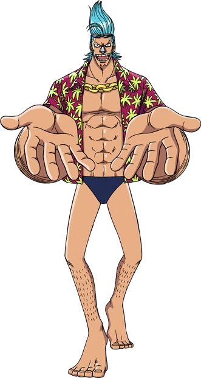

Quem é Frank?
Franky é o carpinteiro dos Piratas do Chapéu de Palha. Ele é um cyborg de 36 anos de Water 7 e foi introduzido na história como o líder da Família Franky, um grupo de desmantelamento de navios. Ele foi originalmente chamado de "Cutty Flam" até trocar seu nome original por seu apelido a pedidos de Iceburg para esconder sua identidade. Franky e seus seguidores foram inicialmente introduzidos como antagonistas do Arco Water 7 contra os Chapéus de Palha até as circunstâncias forçá-los a se tornarem aliados
A pedido da Família Franky, Franky foi permitido se juntar aos Chapéu de Palha para realizar seu sonho de criar e dirigir um navio capaz de dar a volta ao mundo, o Thousand Sunny. Ele é o oitavo membro da tripulação dos Chapéus de Palha e o sétimo a se juntar ao bando de Luffy. Ele também é o segundo membro a ser um ex-antagonista (o primeiro sendo Nico Robin). Ele tem uma recompensa de $394,000,000. Ele é originário do South Blue, de onde saiu 32 anos atrás como uma criança de apenas quatro anos de idade. Franky ainda foi considerado pela marinha um dos 9° comandantes de Luffy, sendo o 6° Comandante, seguindo a lógica da sua recompensa (embora na foto de seu cartaz de procurado esteja a foto do Sunny.)
Como é a aparencia dele?

Como resultado das modificações que fez em seu próprio corpo, Franky é um poderoso homem com cerca de 2,30m de altura e é o segundo membro mais alto dos Chapéu de Palha (o primeiro sendo Brook). Seus antebraços são relativamente grandes enquanto que seus biceps são comparadamente finos. Ele tem cabelos da cor azul-claro brilhante e tatuagens em forma de estrela azul em cada antebraço. Suas roupas normalmente se resumem a uma sunga, o faz as pessoas o chamarem de pervertido, e uma camisa havaiana aberta mostrando um cordão de ouro em seu pescoço.
Durante a separação dos Chapéu de Palha, após explodir o laboratório de Vegapunk, a pele de seu rosto ficou completamente queimada. Ele sempre leva consigo um par de óculos escuros que usa normalmente quando as coisas ficam sérias. De acordo com Eichiiro Oda, Franky lembra um touro, é representado pela cor azul-claro e cheira a cola.
Personalidade dele
Franky é um exibicionista e um pervertido autoproclamado. Ele é obstinado, excêntrico, de espírito livre e frequentemente tem um desprezo flagrante por regras e normas. Ele faz o que quer quando quer, embora geralmente queira pouco mais do que construir navios poderosos ou proteger aqueles de quem gosta e às vezes pode parecer muito excêntrico em comparação com a maioria da tripulação por causa de seus estranhos maneirismos e habilidade para construir coisas estranhas (como seu Franky Centaur). Ele também é altamente auto-engrandecedor, revelando o quão "SUPER" ele é e como seu corpo ou invenções são brilhantes.
Apesar de seu comportamento estranho e bobo, Franky demonstrou ser um dos mais maduros e confiáveis dos Chapéus de Palha, fazendo um esforço para entreter os jovens companheiros de tripulação, mas mantendo os assuntos sérios em mente. Dependendo da situação e das pessoas com quem está lidando, Franky pode ser um tanto altruísta, pois é rápido em defender outras pessoas e agir se seus amigos forem prejudicados; ele também acredita que não importa como uma pessoa seja, ela nunca deve ser prejudicada ou exterminada simplesmente por ser quem é. Isso muitas vezes faz com que ele faça amizade e defenda os injustamente temidos e perseguidos.
Por causa de sua atitude imparcial e protetora, ele é rápido em fazer amigos e aliados dos indivíduos mais improváveis, como bandidos de rua e piratas. Ele é visto como uma figura de 'irmão mais velho' e é admirado por muitos por seus esforços para protegê-los, como Nico Robin e a Família Franky. Monkey D. Luffy e Franky compartilham alguns traços de personalidade, com exceção de lutar desnecessariamente, e ambos cresceram a respeitar um ao outro durante os eventos do Arco Enies Lobby, apesar das disputas que os dois tiveram durante o Arco Water 7. Foi demonstrado que a personalidade de Franky pode alterar um pouco, dependendo da bebida em seu sistema.
Todas as recompensa do Franky
- 394,000,000 Berries
- 94,000,000 Berries
- 44,000,000 Berries
Primeira recompensa
Por ter queimado as plantas do Pluton, e derrotando Fukurou da CP9, e ajudando os chapéus de palha em Enies Lobby, Franky recebeu uma recompensa de $44.000.000.
Segunda recompensa
Ao ajudar na derrota dos Piratas Donquixote, sua recompensa foi aumentada para $94.000.000.
Terceira recompensa
É a atual recompensa e conseguiu ajudando em onigashima na batalha e ajudar a libertar Wano e por Luffy ser um imperador conseguiu a recompensa $394.000.000
Habilidades do Franky
Franky é um companheiro da tripulação bastante competente, ele é um construtor naval de um nível bastante elevado. Franky é o encarregado de manter o Thousand Sunny em boas condições sempre, juntamente com os outros veículos, instrumentos ou armas que dos chapéus de palha. Ele também é um cirurgião talentoso já que ele foi capaz de executar uma operação em si mesmo duas vezes, apesar do fato de que ele não ser especialista nessa área. Ele foi capaz de fazer isso mesmo quando ele estava perto da morte.
Em termos de força física comum, Franky pode facilmente ser contado como um dos membros mais fortes da tripulação. Seus anos antes de ser um chapéu de palha parecem ter contribuído grandemente para a sua força formidável; mesmo em um mal estado, ele exibe força suficiente para levantar um elefante adulto e arrastá-lo ao redor do tronco como se fosse uma boneca de pano. Quando confrontado pela primeira vez pelos membros da CP9 em Water 7, Franky mostrou ser forte o suficiente para quase romper o Tekkai de Blueno e rapidamente dominá-lo em termos de força. Franky foi ainda capaz de lutar mesmo em uma luta curta de igual para igual contra Luffy .
Além de sua força, Franky também exibe uma habilidade considerável em qualquer item que ele coloca suas mãos , seja dentro ou fora de combate (ele foi visto exercendo, com uma habilidade considerável, um grande par improvisado nun-chakus contra Tararan) mesmo sem suas funções de cyborg, habilidades de luta de Franky são mais que suficientes para lhe permitir lutar até mesmo contra assassinos treinados. O fato de que ele poderia derrotar Fukuro, um membro da CP9 por conta própria é uma prova de seu talento. Seu estilo de luta parece girar em torno de boxe, mas ele não hesita em lutar sujo se necessário.
Além de seu corpo-cyborg reforçado, Franky é também um construtor naval de primeira linha e era carpinteiro quando trabalhava para Tom. Mesmo os seus anos de desmantelamento não haviam afetado suas habilidades de carpintaria e construção naval; talvez a melhor prova disso foi quando ele foi capaz de terminar a construção do Thousand Sunny, com a ajuda de Iceburg e os construtores navais da Galley-La Company, em um curto período de tempo. Seu intelecto também lhe permitiu criar lasers de luz entendendo os conceitos da Pika Pika no Mi que só Vegapunk foi originalmente capaz de criar. Depois destruir a planta do navio Pluton, Franky era a única pessoa com o potencial de recriar a antiga temível arma de destruição em massa.
Ele desenvolveu um mecanismo de canhão, que se acumula ar rapidamente dentro de um espaço fechado á direita antes de lançá-lo como um projétil à base de ar comprimido e poderoso o suficiente para derrubar grandes estabelecimentos, bem como fornecer um meio de propulsão, que serviu como um modelo que deu origem à criação de suas funções "Coup de Vent". Ele projetou o Thousand Sunny-se com várias funções únicas, como o golpe de estouro e do Sistema Doca Soldier.
Ou seja Franky é um gênio em construção naval, engenharia e carpintaria de altíssimo nível que pode criar coisas de muita qualidade com incrível tecnologia em pouco tempo e com facilidade .